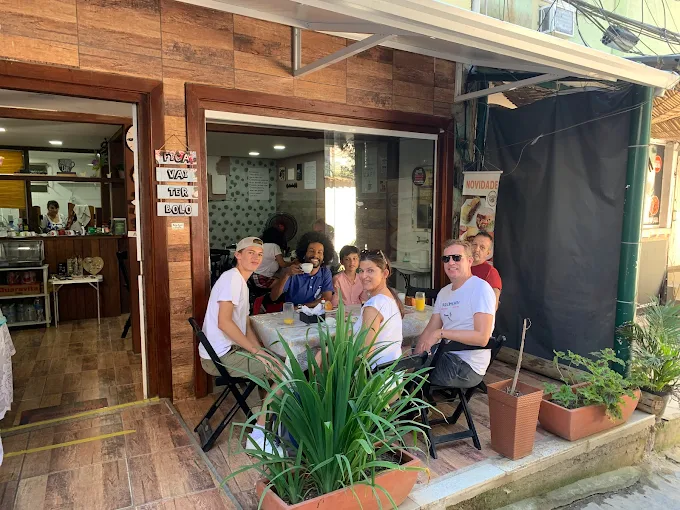
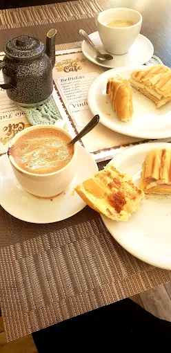
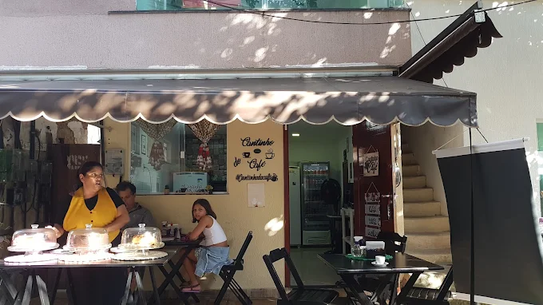
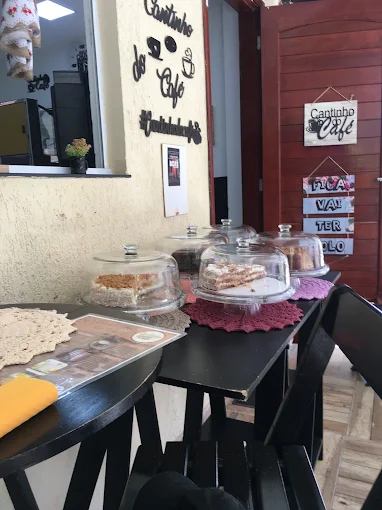
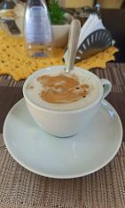
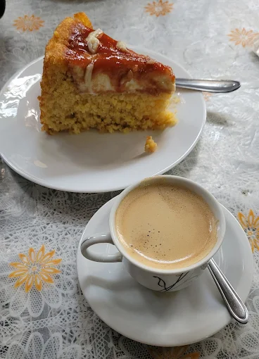
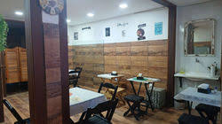

Cantinho do Café
Uma cafeteria charmosa com cardápio variado de cafés, bolos, tapiocas e sanduíches.









Sobre o Café
O Cantinho do Café faz jus ao nome: é uma cafeteria charmosa conhecida pelo cardápio variado de cafés, bolos, tapiocas e sanduíches preparados com cuidado.
Entre as opções estão cafés espresso, cappuccino, chás, sucos naturais, vitaminas e diversas opções de lanches doces e salgados. O ambiente é agradável e tranquilo, ideal para um café da manhã relaxante ou um lanche da tarde depois de explorar a ilha.
Para muitos visitantes, esse é o lugar perfeito para sentar, descansar e aproveitar o ritmo mais calmo da Ilha da Gigóia antes de seguir explorando restaurantes, bares e passeios pela lagoa.
A Experiência
- ✓ Cafés, Sucos e Vitaminas
- ✓ Tapiocas e Bolos Caseiros
- ✓ Lanches Doces e Salgados
- ✓ Clima Agradável e Tranquilo
Ambiente
Agradável, charmoso e ideal para relaxar.
Destaque
☕ A parada perfeita para um café da manhã ou lanche da tarde.